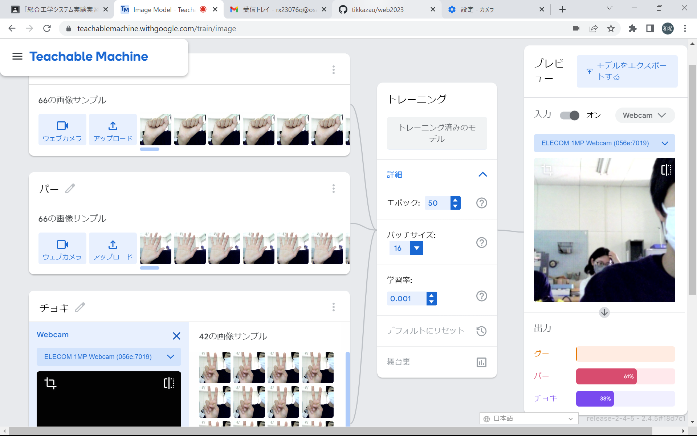
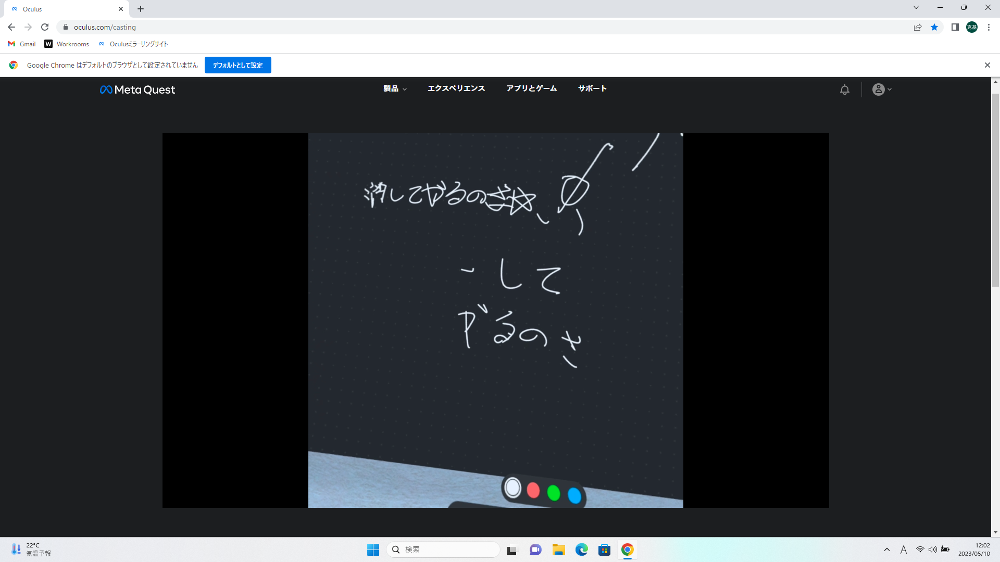

第2週目
2-1 １週目のレポートをHTMLで作る
１週目のレポート
1.内容
1週目の授業でしたこと、その感想をまとめた。
2.感想
したことを自分の言葉でまとめることが思っている以上に難しく、時間がかかってしまったので次回からはなるべく効率よくやっていきたいと思った。
2-2 機械学習体験

1.内容
カメラを利用してじゃんけんもどきができるようにした。
2.感想
カメラで画像を記録するだけで共通点などから今の画像を判断できるなら、もっと
ほかのことにも個人的に挑戦してみたい。
2-3 VR（バーチャルリアリティー：Virtual Reality）会議室の体験

1.内容
VRゴーグルの画像をパソコンにキャプチャしたり会議室に入って絵をかいたりした
2.感想
実際にやってみると意外と臨場感がありもっと深い内容も知りたいと思った。